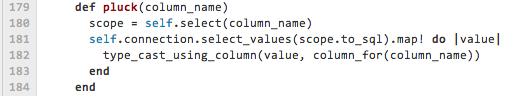
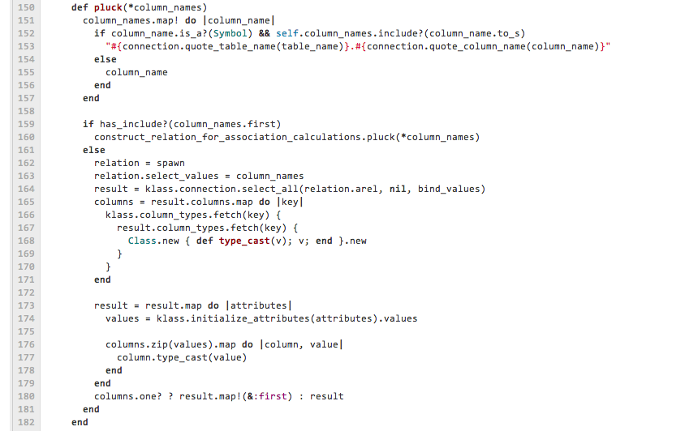

| z, ? | toggle help (this) |
| space, → | next slide |
| shift-space, ← | previous slide |
| d | toggle debug mode |
| ## <ret> | go to slide # |
| c, t | table of contents (vi) |
| f | toggle footer |
| r | reload slides |
| n | toggle notes |
| p | run preshow |
me: "Человек, который умеет писать код,
может решить эту задачу за 10 минут"
someone: "Я не пишу код.
Я больше по архитектуре."
Most people think that
when web site becomes popular
a high load issue becomes a bottle neck.
This is not true for most of the projects:
reach load problems is harder
than reach support problems
The initial version of ActiveRecord::Relation#pluck looked like this

How do you think how big is it now?

Delayed::Job.enqueue(...)
Delayed::Job Create (0.2ms)
INSERT INTO `delayed_jobs` (...)
VALUES (...)
Resque.enqueue(...)
Redis >> SADD resque:queues low
Redis >> 4.09ms
Redis >> RPUSH resque:queue:low {...}
Redis >> 0.28ms
Delayed::Job.all
???
Removing *** gem
---
Gemfile | 1 -
Gemfile.lock | 3 ---
app/models/coupon.rb | 10 ++++++++--
.../show.haml | 2 +-
lib/util.rb | 4 ++--
11 insertions(+), 9 deletions(-)
Random phrase from the internet:
IT is following the loop just like any other industry And it's Ok!